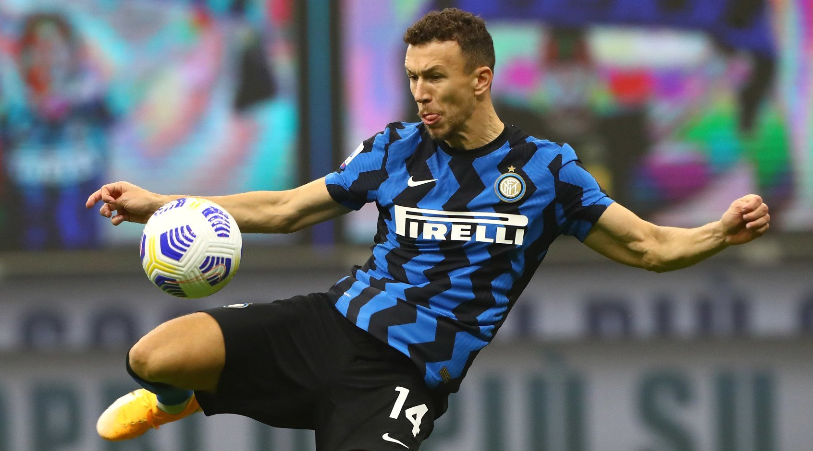

Իվան Պերիշիչը տեղափոխվել է Տոտենհեմ, որպես ազատ գործակալ։
Իվան Պեիշիչը տեղափոխվել է Տոտենհեմ, որպես ազատ գործակալ։ Աշխատավարձի մասին դեռ լուրեր չկան։
Այս սեզոնում ֆուտբոլիստը խաղացել է 49 խաղ խփել է 10 գոլ և տվել է 9 ասսիստ:

Իվան Պեիշիչը տեղափոխվել է Տոտենհեմ, որպես ազատ գործակալ։ Աշխատավարձի մասին դեռ լուրեր չկան։
Այս սեզոնում ֆուտբոլիստը խաղացել է 49 խաղ խփել է 10 գոլ և տվել է 9 ասսիստ: